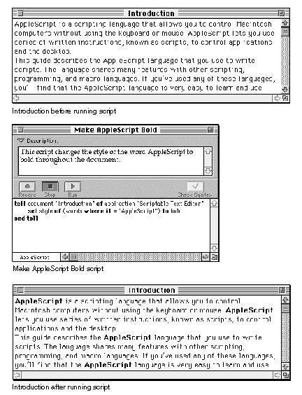

Automating Activities
Scripts make it easy to perform repetitive tasks. For example, if you want
to change the style of the word "AppleScript" to bold throughout a document named Introduction, you can write a script that does the job instead of searching for each occurrence of the word, selecting it, and changing it from
the Style menu.Figure 1-2 shows the script and what happens when you run it.
Figure 1-2 A script that performs a repetitive action
